Prazer, eu sou a Letícia!
Eu tenho 26 anos , nasci no dia 19/05/2000.
Nasci em paranaipa-pi um lugar que eu amo muito, mas hoje moro em Brasilia.
tenho 3 animais , uma cachorra e duas gatinhas.
Sou uma pessoa que gosta de conhecer coisas novas, viver experiências diferentes e descobrir o mundo. Tenho muitos sonhos, curiosidades e vontade de aproveitar cada oportunidade que a vida oferece.
Minha raízes
Minha história começa em Parnaíba, no estado do Piauí, cidade onde nasci e vivi até os meus 5 anos de idade.
Foi lá que começaram minhas primeiras lembranças e uma parte muito especial da minha história. Mesmo seguindo novos caminhos, minhas raízes sempre farão parte de quem sou.
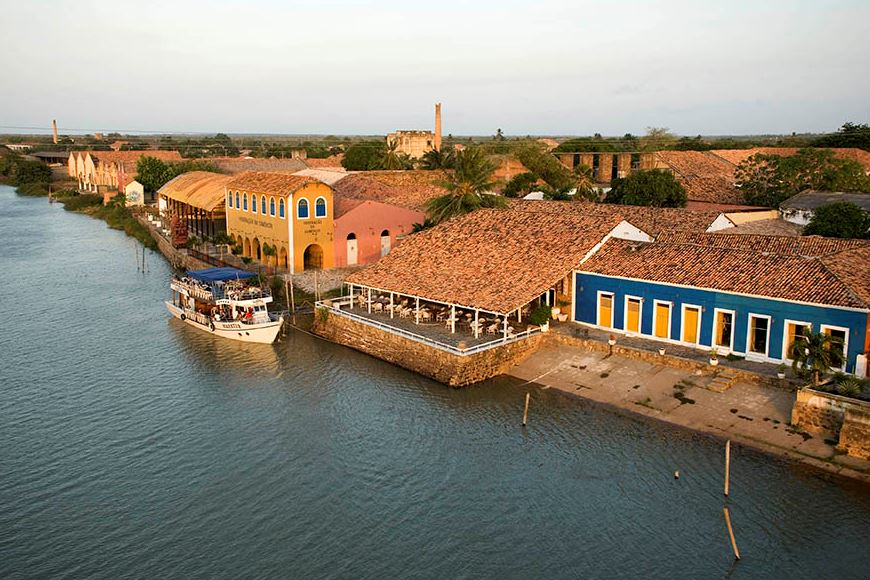
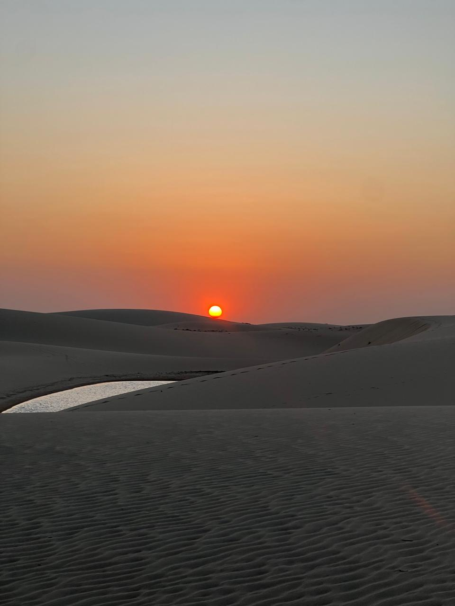

Minha infância
Minha infância foi vivida na cidade de Ilha Grande, no Piauí, onde morei com meus avós até os 5 anos de idade. Cresci cercada pelos meus primos e passava os dias brincando com eles.
Entre as lembranças mais especiais estão os passeios ao rio e às dunas que ficavam perto da casa da minha avó. São recordações simples, mas que guardo com muito carinho.
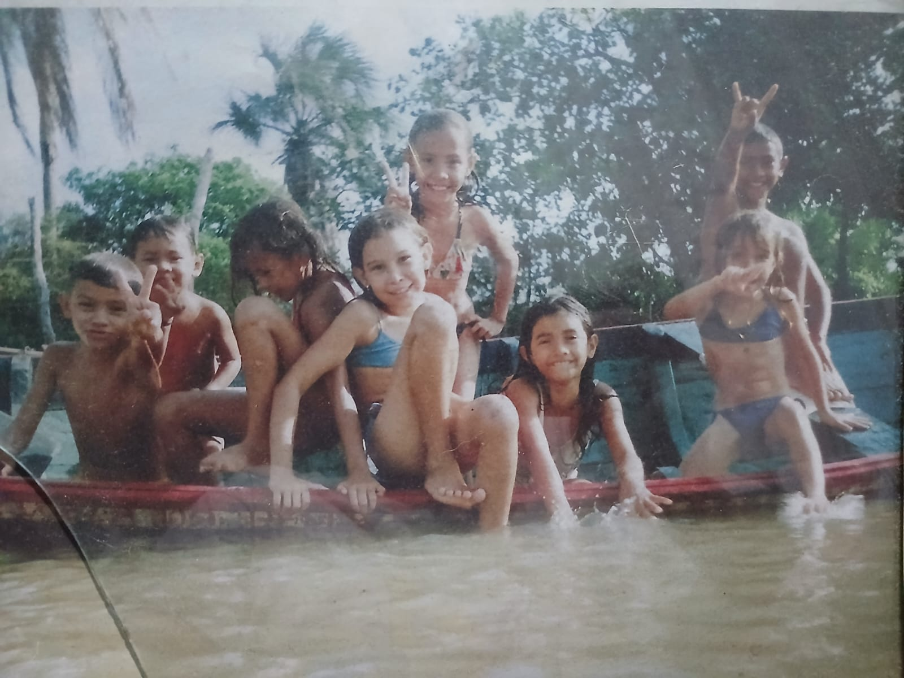
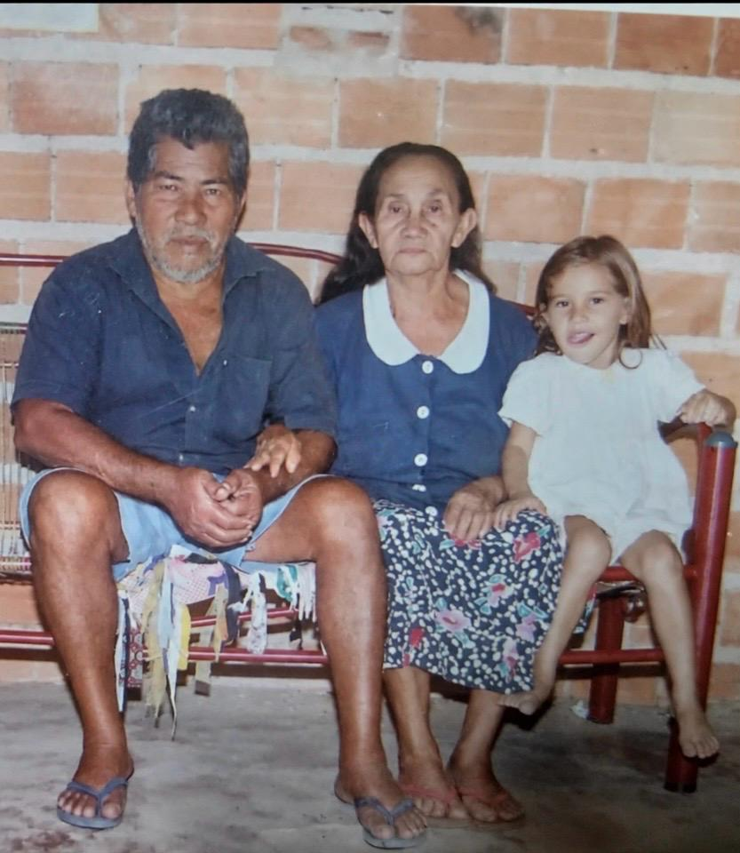
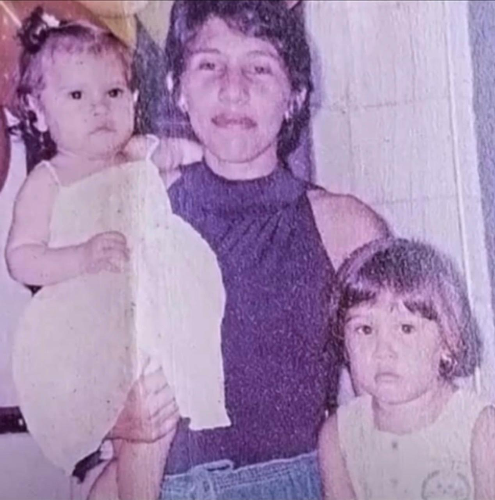
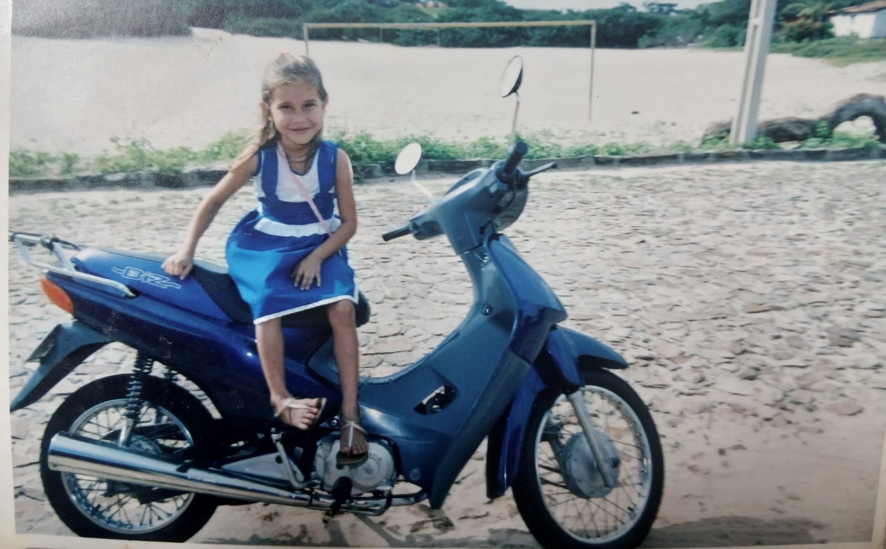
Minha família
Minha família é uma parte muito importante da minha história. São pessoas que fazem parte das minhas lembranças, da minha caminhada e de muitos momentos especiais da minha vida.
Cada pessoa tem um lugar único na minha história, e guardar esses momentos em fotografias é uma forma de preservar tudo aquilo que vivemos juntos.
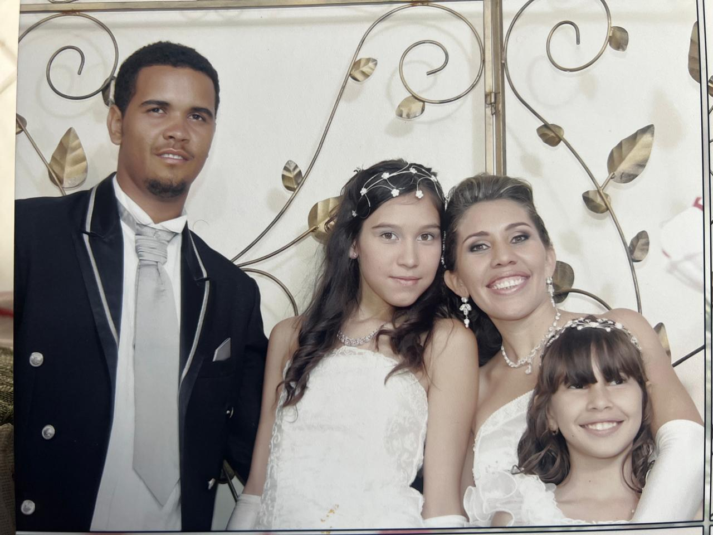
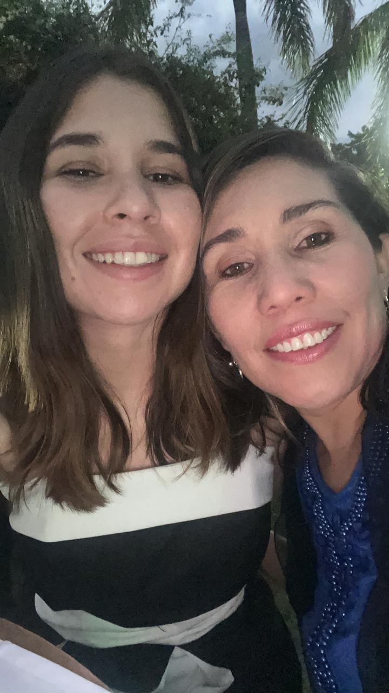
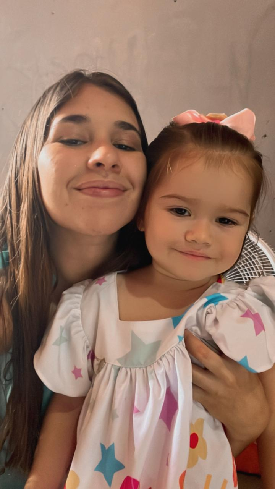
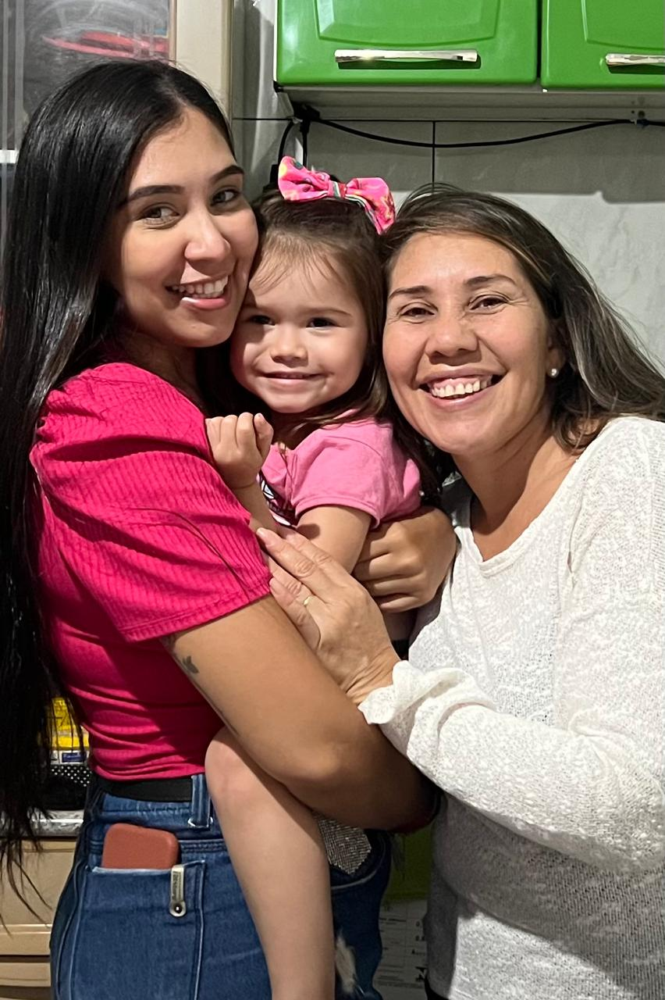
Meus animais 🐾
Além da minha família, tenho três companheiras de quatro patas que fazem parte da minha vida: Kalle, minha cachorra, e Marie e Juquinha, minhas duas gatinhas.
Cada uma tem sua personalidade e seu jeitinho especial. Entre brincadeiras, carinho e momentos divertidos, elas tornam meus dias mais alegres e minha vida cheia de amor.
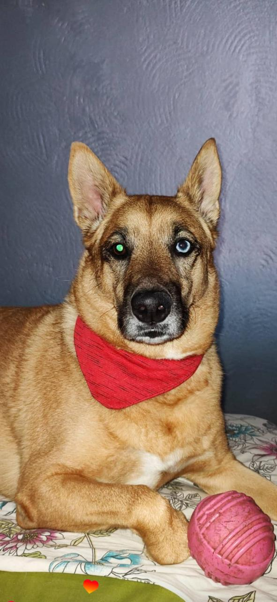
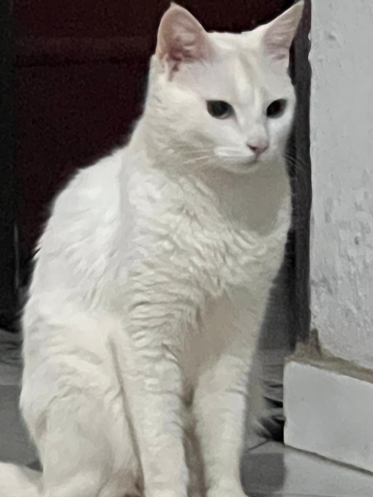
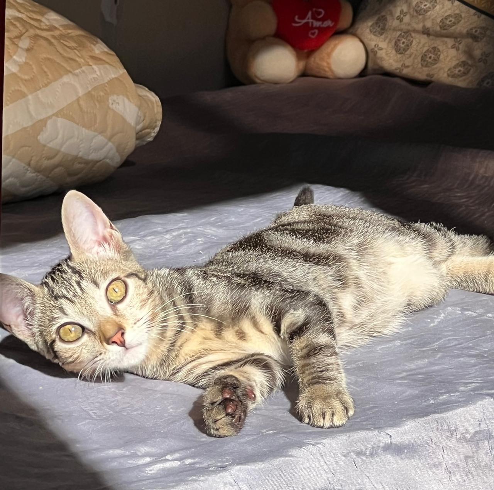